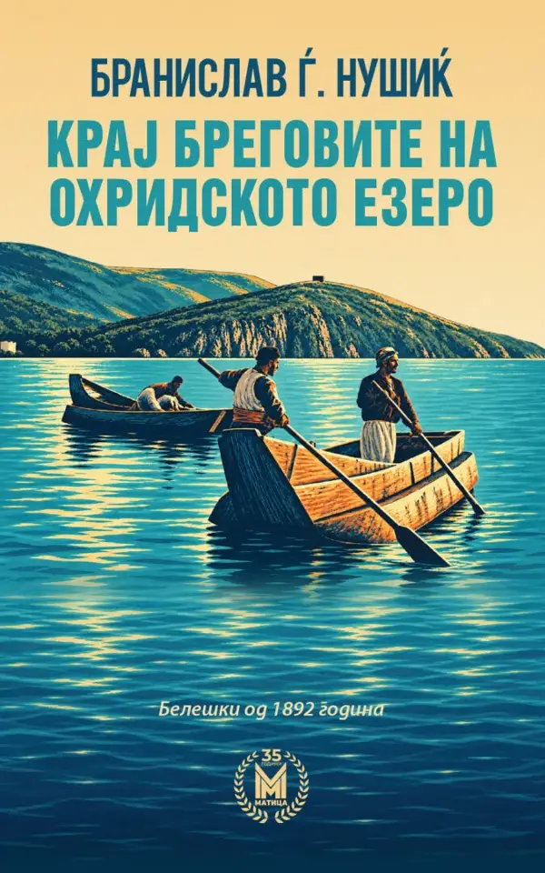

Day.mk - Најнови Вести (Страница 221)
Филаделфија го победи шампионот, Оклахома го растури Сан Антонио
Голем придонес во победата даде и Џаред Мекејн, кој постигна 20 поени со одличен шут за три поени – погоди шест од осум обиди. Браун имаше 19 поени, осум скока и шест асистенции...
ВОЕН АВИОН СЕ УРНА ВО ФРАНЦИЈА Остатоците на леталото се лоцирани со дрон
Како што соопшти градоначалникот на Пон-а-Мусон, Анри Лемоан, несреќата се случила синоќа околу 23:35 часот, во областа меѓу Нанси и Мец. Остатоците од леталото биле забележани ...

Објавен патописот „Крај бреговите на Охридското Езеро“ од Бранислав Нушиќ на македонски јазик
Во издание на „Матица македонска“ излезе патописот „Крај бреговите на Охридското Езеро“ од Бранислав Нушиќ. Книгата го враќа читателот во Охрид, Струга и езерските населби од пр...
Два концерта „Слободна среда“ во организација на Музичка младина на Македонија
Преку оваа платформа, Музичка младина на Македонија продолжува да ја поттикнува младата музичка сцена, создавајќи простор за афирмација, меѓусебна поддршка и непосредна средба н...
Гори депонијата во село Еднокуќево, чадот се чувствува и во околината на Струмица
Денес, уште од раните утрински часови, пожарникарите-спасители повторно се на терен и интервенираат со цел локализирање и гаснење на пожарот, информираа од ТППЕ Струмица. Екипит...
(Фото/Видео) Секси издание на „најубавиот ангел“ за забавата по ревијата: Целосно проѕирно и (пре) кратко
Бела Хадид носеше крилја на овогодинешната модна ревија на „Victoria’s Secret“ и изгледаше божествено; за забавата по ревијата, таа се одлучи за многу секси изглед, истакнувајќи...
Тања Стојановска си замина од Канал 5
Препознатливиот телевизиски лик, кој со години беше дел од секојдневието на гледачите, сега продолжува на нова адреса, Алфа ТВ, каде што ќе застане пред публиката како презентер...
Францускиот филм „Тест на издржливост“ на програмата на „Кино средби“ во Кинотека
Францускиот институт во Скопје и Кинотеката вечер ќе организираат ново издание на месечните „Кино средби“, во чии рамки ќе биде прикажан современиот француски филм „Тест на издр...
Паника во Париз, крај на сезоната за Кварацхелија
За разлика од капитенот на парискиот тим, Маркињос, кој исто така мораше да го напушти натпреварот, Кваратцхелија речиси беше изнесен од теренот. По натпреварот во Париз, „Лекип...
Администрацијата на Трамп поништи над 300.000 визи
Активистите за човекови права тврдат дека владата се повикува на националната безбедност за „да ги таргетира критичарите на администрацијата“. Портпаролот на Стејт департментот,...
Најнови Вести